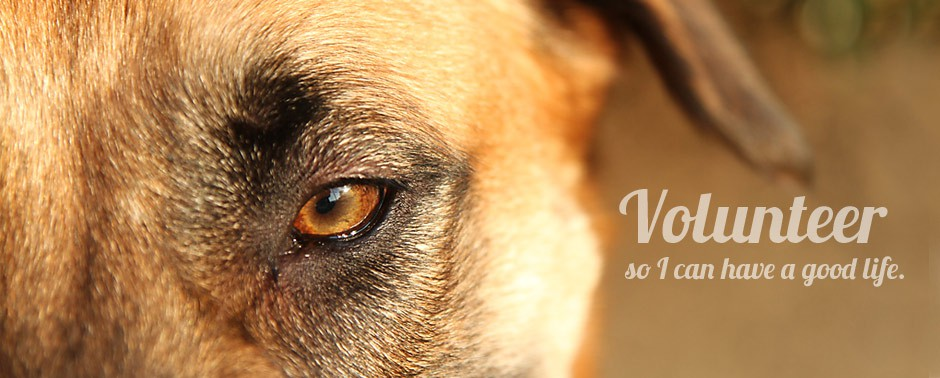

Volunteering
PAWS Ohio has rescued, fostered, treated and adopted thousands of animals through an amazing network of dedicated volunteers who perform a variety of tasks that help save the lives of dogs and cats in need. Volunteers are critical to our success, and they perform many vital functions at PAWS. We could not do what we do without all of our dedicated volunteers!
You will find a number of opportunities that allow you to participate in a meaningful way with the flexibility to participate as your schedule allows:
FosteringProvide a temporary home for a rescued animal until an adoptive home is secured. If you’re interested in fostering, please check out our Foster Program.Application Screening
join our dynamic cat and dog adoption teams and help us save more animals by screening adoption applications, or assisting our Adoption Coordinators by doing vet and rental reference checksTransportation
Drive animals from our shelters partners, to and from adoption events, and take our animals to medical appointmentsEvents
Provide support for adoption events and/or special fundraising events throughout the year. To check out some of our upcoming events, visit our Events Page.Fundraising
Be a part of our fundraising team, and help raise money for all our animals in need! Consider selling sponsorships or soliciting for raffle items for various events throughout the year. Start an office donation drive; accept donations in lieu of gifts for birthdays, weddings, anniversaries; hold an event at your home, at your favorite bar, at your church…anywhere you enjoy spending time; hold a bake sale; create an online giving page; set up a giving page on Facebook; and more! Ask us about all the different ways you can help raise needed funds to keep PAWS on its mission.PetSmart Adopt-a-thons
Man our PAWS table and showcase our animals at local PetSmart stores once a month while introducing the public to our organizationAdministrative Support
Answer emails and other administrative duties.